01 / Python concept
BMI calculator
Enter height and weight to calculate BMI in metric or US units. Adapted from the Python project.
For exploration only; BMI does not describe overall health.
Engineering / Selected projects
A collection of programming explorations in Python, Java, and C++.
← Back to featured workTry it live
These lightweight browser demos let you interact with selected projects. Your inputs stay in your browser.
Enter height and weight to calculate BMI in metric or US units. Adapted from the Python project.
For exploration only; BMI does not describe overall health.
Experiment with hours, pay rate, and a tax percentage. Overtime uses 1.5× pay above 40 hours.
Simplified learning demo; not a payroll or tax calculation.
Try the original +4 letter shift and even/odd hexadecimal ordering, or reverse a code generated here.
Letters only; spaces and punctuation are removed. This is a learning cipher, not secure encryption.
The collection
Explore the original project files and notes on GitHub.
13 projects
No projects match. Try another search or clear the filters.
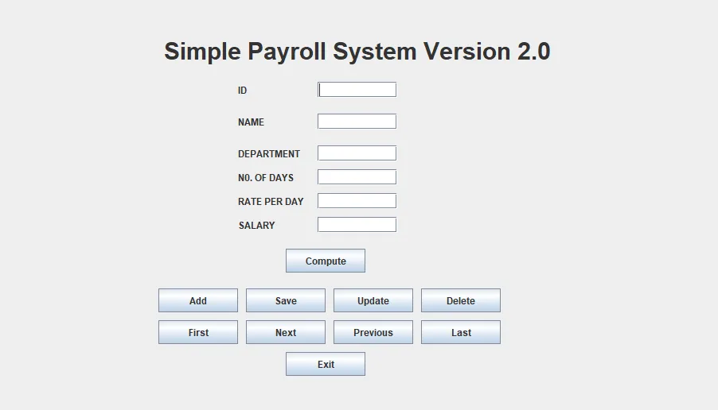
Built a payroll calculator for taxes, gross pay, net pay, and overtime.
Try live demo Explore project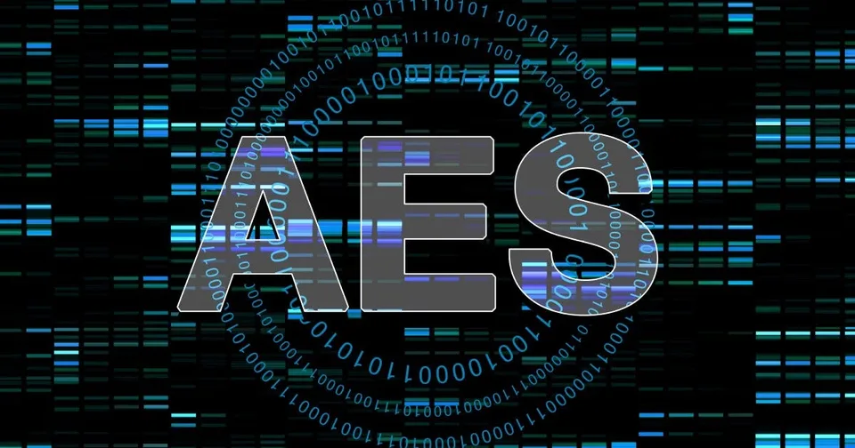
Explored AES encryption and decryption in CBC and ECB modes. This learning project includes unfinished work on hexadecimal conversion and ECB decryption.
Explore project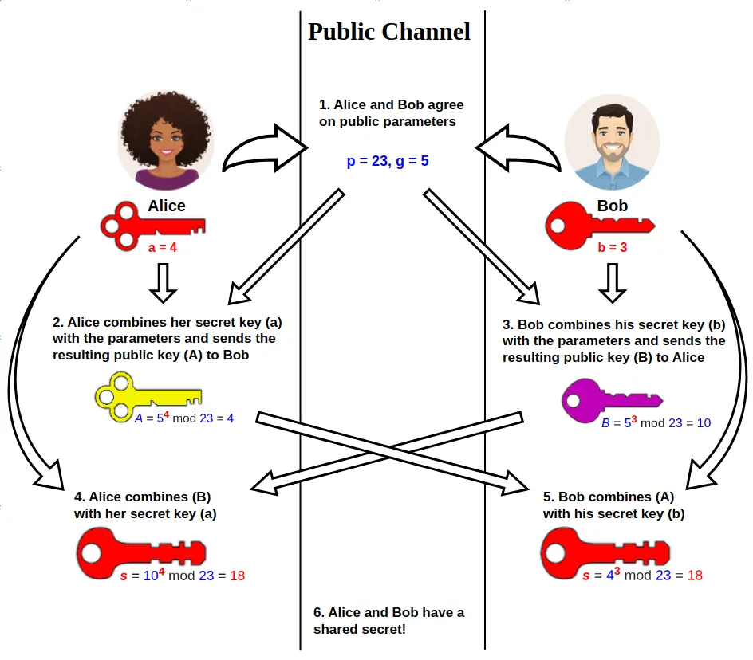
Implemented shared-secret calculations for two parties and compared the resulting keys.
Explore project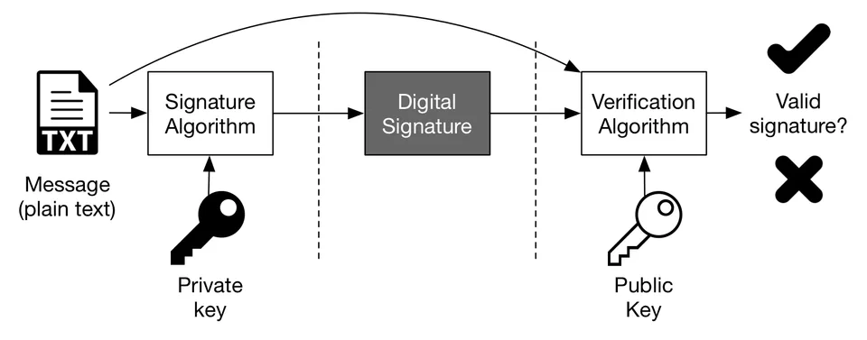
Checked PDF signatures against public keys and reported which combinations verified successfully.
Explore project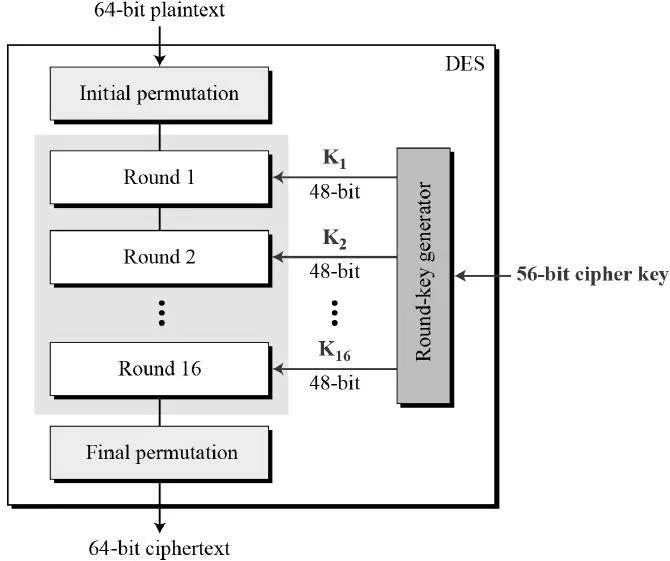
Implemented a DES-like learning cipher with expansion, S-boxes, subkeys, and multiple encryption rounds.
Explore project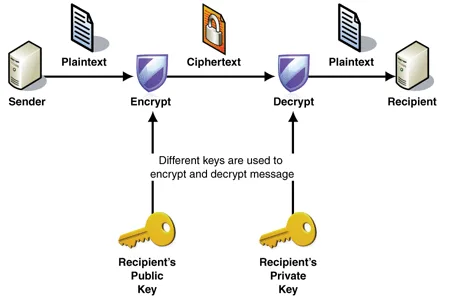
Built a small cipher using XOR operations and a fixed key, with a round-trip check that recovers the original input.
Explore project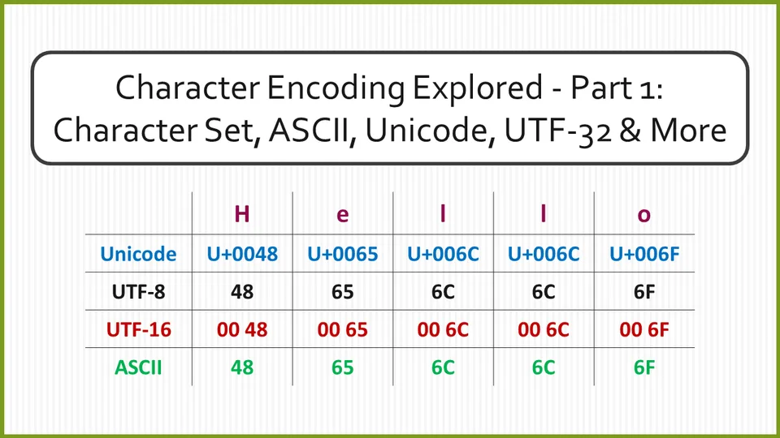
Built a custom character cipher that shifts letters, groups their numeric values, and formats the output in hexadecimal.
Try live demo Explore project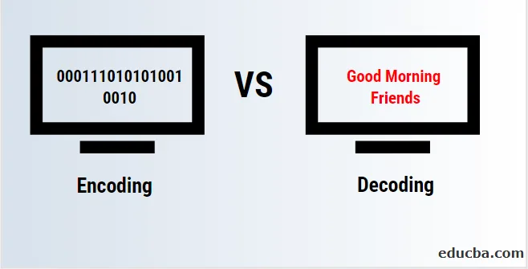
Implemented the reverse of a custom character cipher to recover text from grouped numeric values.
Try live demo Explore project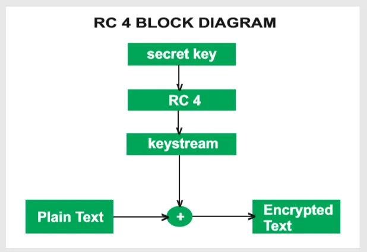
Explored key scheduling, keystream generation, and symmetric encryption in an RC4 learning implementation.
Explore project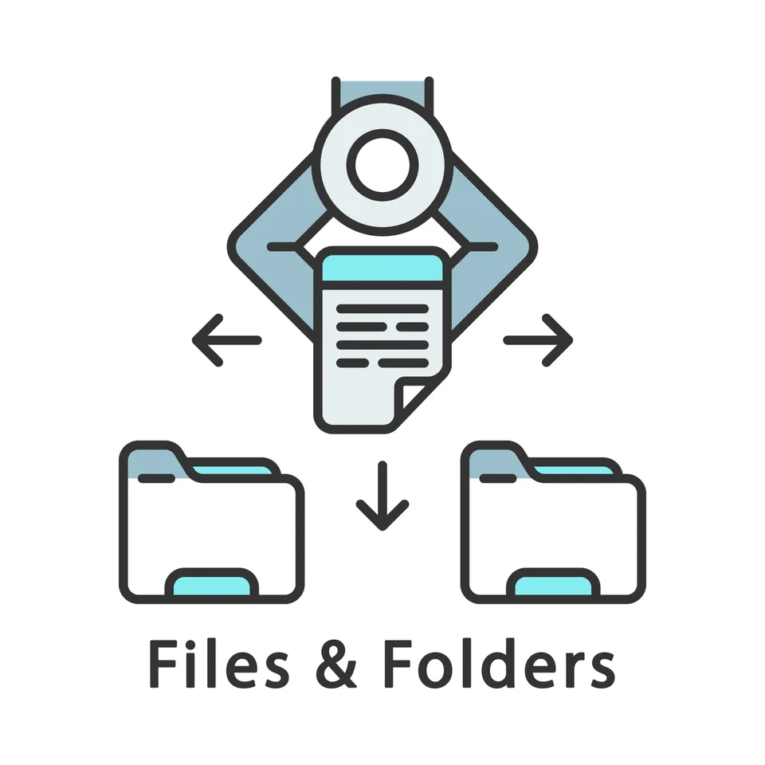
Organized PDF and Word documents into subfolders based on their file extensions.
Explore project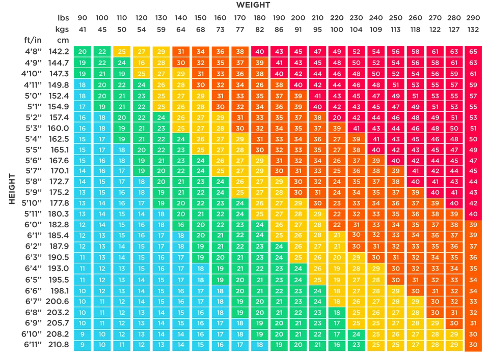
Built a command-line calculator that uses height and weight to calculate BMI and display a category.
Try live demo Explore project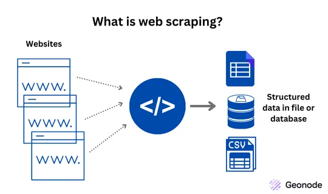
Used BeautifulSoup and pandas to extract a Wikipedia table of US companies by revenue into a DataFrame.
Explore projectGenerated composite numbers and measured the time needed to recover their prime factors using trial division.
Explore project